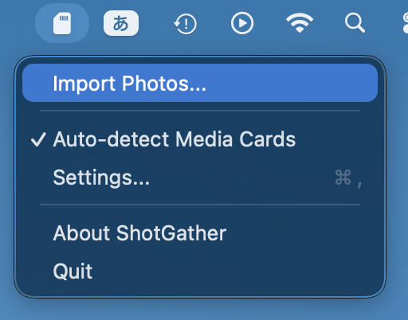
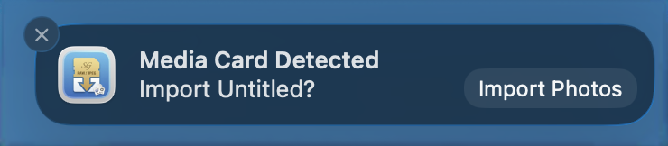
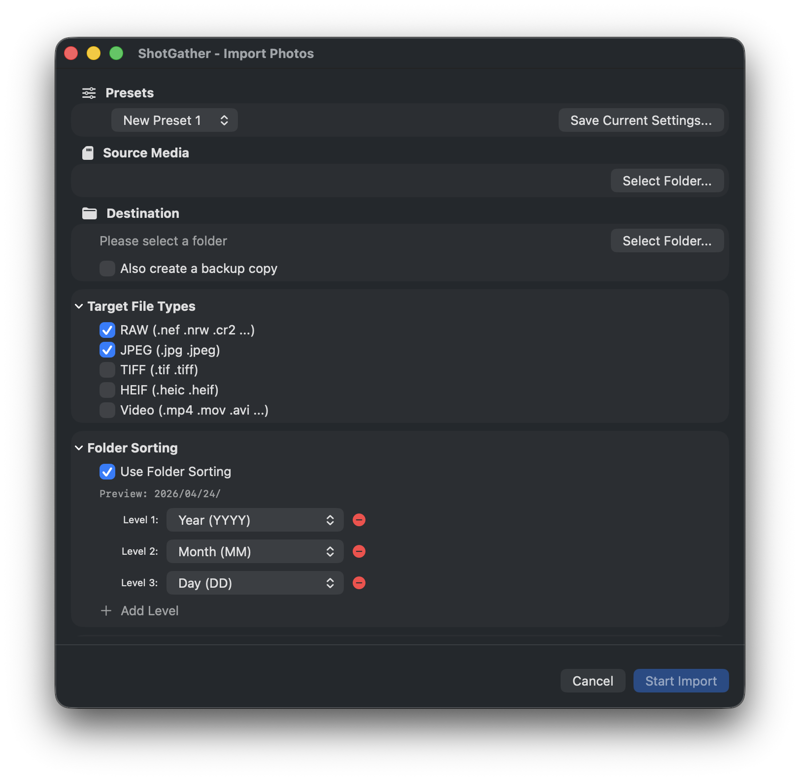
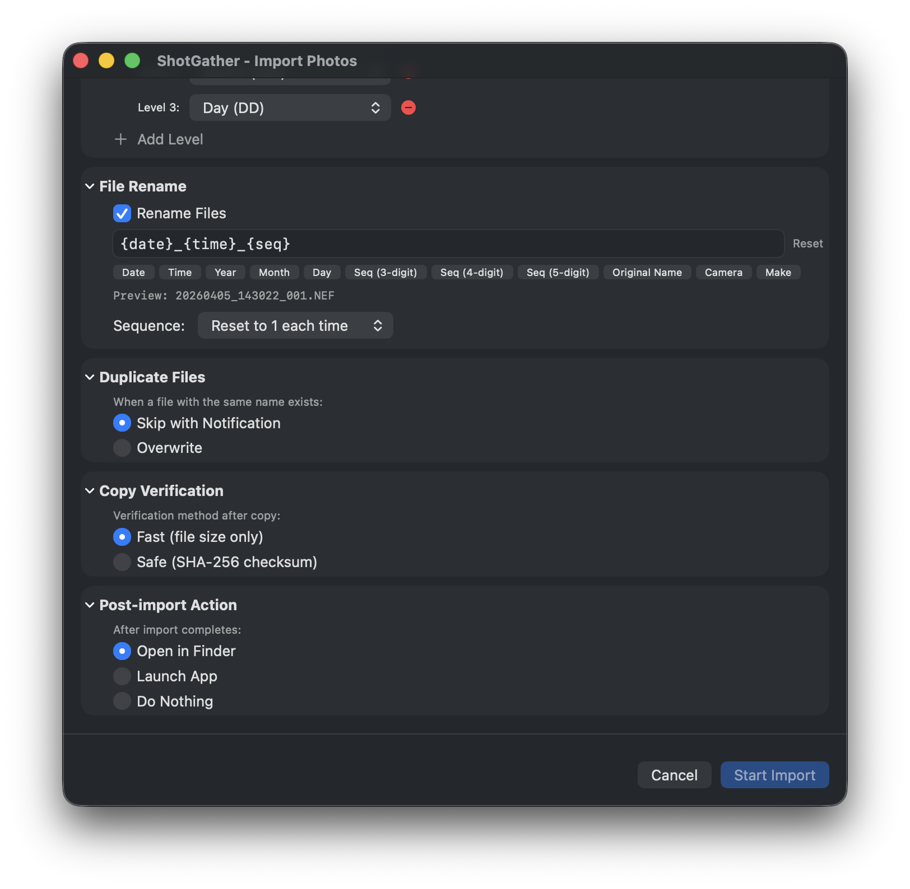
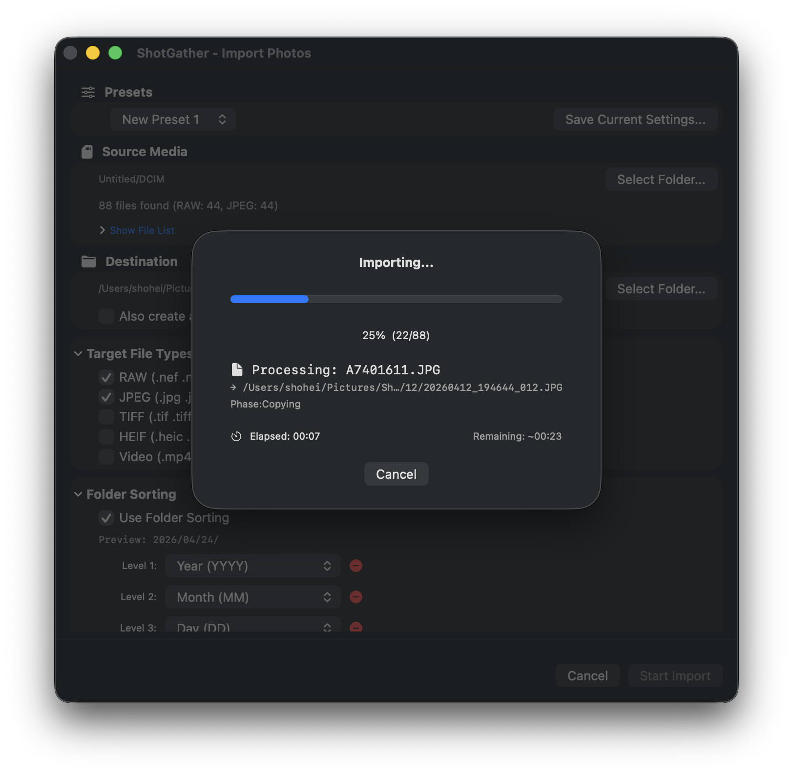
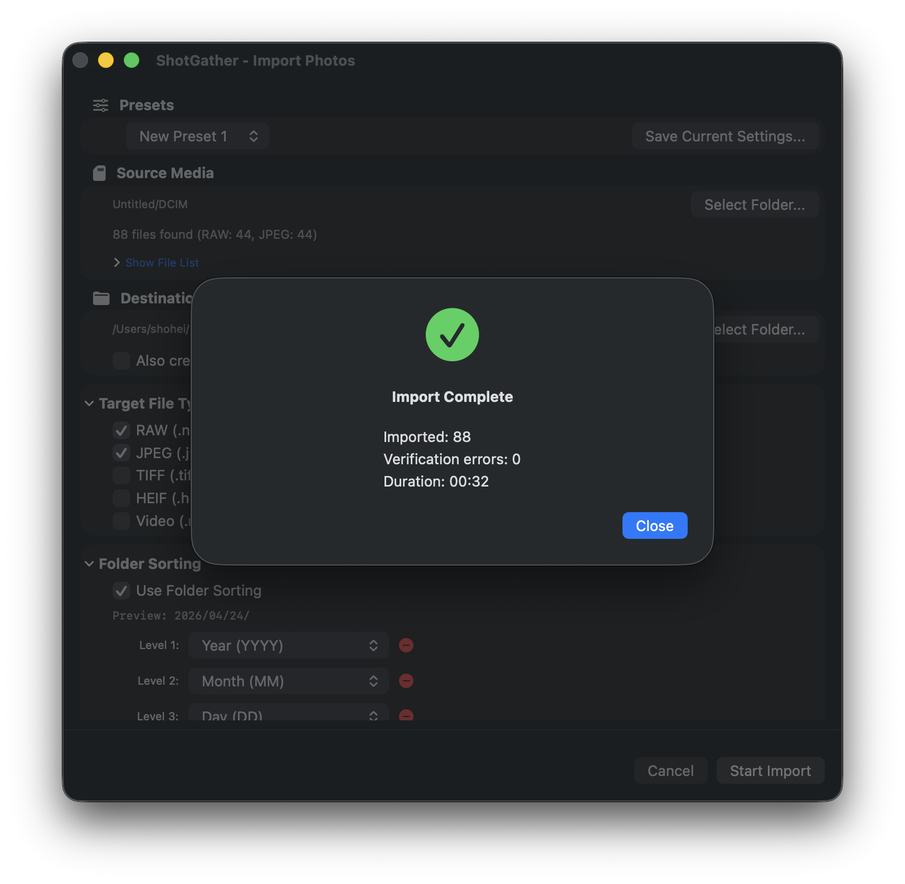
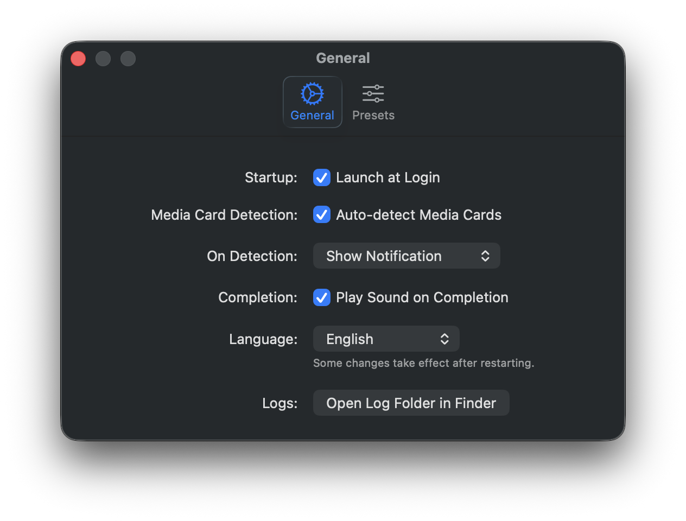
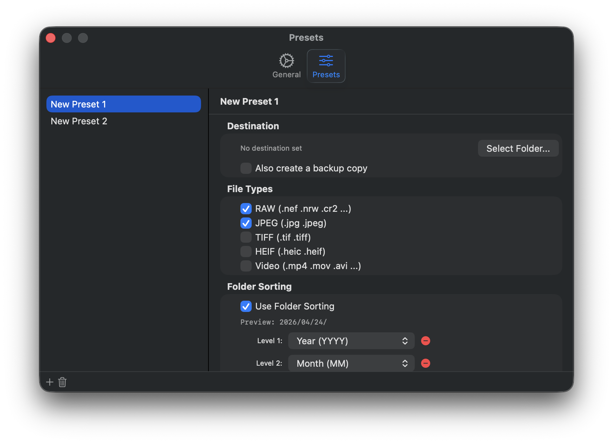

1. What is ShotGather?
ShotGather is a free macOS menu bar app for importing photos and videos from media cards to your Mac. It supports SD, CFexpress, and XQD cards as well as USB-connected cameras, and it only copies — it never deletes or modifies the original files on the card.
During import, ShotGather can sort files into year/month/day folders based on the EXIF capture date, rename files in bulk, verify each copy with a SHA-256 checksum, and copy to a backup drive at the same time. It is designed to work alongside RAW processing software such as DxO PhotoLab, Capture One, and Photoshop Elements 2026.
If you've been building your own photo import workflow with Automator folder actions or Image Capture's "Connecting this camera opens" option, ShotGather is a drop-in replacement. There are no workflows to build or maintain — everything is configured from the app's settings.
Key Features
- Auto-detect Media Cards — Detects SD, CFexpress, and XQD cards and USB camera connections, and notifies you.
- Date-based auto-sorting — Reads the EXIF capture date and automatically creates folder structures such as year/month/day.
- File renaming — Freely combine tokens such as date, time, sequence number, and camera name.
- File type filter — Import only the types you want: RAW, JPEG, TIFF, HEIF, and video.
- Simultaneous backup copy — Mirror files to another drive at the same time as the import.
- Copy verification — Confirm copy accuracy with a file size comparison or SHA-256 checksum.
System Requirements
| Item | Requirement |
|---|---|
| OS | macOS 15 Sequoia or later |
| Architecture | Apple Silicon (M series) / Intel (Universal Binary) |
| Supported Media | SD cards, CFexpress cards, XQD cards, USB-connected cameras (devices with a DCIM folder) |
2. Getting Started
Launching the App
When you launch ShotGather, no icon appears in the Dock. Instead, an SD card icon resides in the menu bar at the top right of your screen. Clicking this icon opens a menu where you can access import operations and settings.

Menu Items
- Import Photos… — Manually opens the import dialog
- Auto-detect Media Cards — Toggles ON/OFF (checkmark indicates ON)
- Settings… — Opens the Preferences window
- User Guide — Opens this guide (shotgather.com) in your browser
- About ShotGather — Displays version information
- Quit — Quits the app
Set Up These Two Things First
Before your first import, the following setup will make things smoother.
- Set the destination folder — Set the destination folder for the default preset in the "Presets" tab of Settings. Without this, you will need to select a folder every time you import.
- Launch at login — Turn on "Launch at Login" in the General tab of Settings so ShotGather automatically starts in the menu bar even after restarting your Mac.
3. Basic Import Flow
Here is the typical process from inserting a media card to completing an import.
- Insert the media card. Use your SD card slot or card reader, or connect your camera to the Mac via USB cable. Devices with a DCIM folder are eligible for auto-detection.
- Start the import from a notification or the menu. If auto-detection is ON, you will receive a "Media card detected" notification. Click the notification, or select "Import Photos…" from the menu bar icon.
- Review the import settings. Select a preset or adjust the source, destination, file types, rename rules, and other settings as needed. You can preview the files to be imported in the file list.
- Click "Start Import". When ready, click the "Start Import (⌘Return)" button and copying begins.
- Monitor progress. You can monitor the copy status in real time on the progress screen. Press the "Cancel" button if you want to stop midway.
- Review the results on the completion screen. A summary of imported files is displayed. Use the "Open Destination" button to jump directly to the folder in Finder.


4. Import Dialog Details
The import dialog has multiple sections, each of which can be collapsed to keep the view tidy.

Presets
You can save commonly used combinations of settings as "Presets". Preparing presets for different shooting scenarios or camera models eliminates the need to change settings every time. Presets are managed in the "Presets" tab of the Settings window.
Source / Destination
- Source — Select the media card (volume) to read from. When auto-detected, it is selected automatically.
- Destination — Specify the folder where photos will be saved. Click "Browse…" to select from Finder.
Simultaneous Backup Copy
Copies files to another drive or folder in exactly the same structure at the same time as the main import. By specifying an external drive or NAS as the backup destination, redundancy is achieved simultaneously with importing.
File Types
Select the types of files to import using checkboxes. RAW and JPEG are selected by default.
- RAW — CR3, NEF, ARW, RAF, ORF, and more (see the FAQ for the full list)
- JPEG
- TIFF
- HEIF (including HEIC)
- Video — MP4, MOV, AVI, MTS, M2TS
Folder Auto-sorting
Automatically creates subfolders in the destination based on the EXIF capture date and time. You can configure up to 5 folder levels, and add or remove levels with the +/− buttons. For each level, select a token from the dropdown and combine patterns per level. You can confirm the generated path in real time with the live preview.
| Option | Description | Example output |
|---|---|---|
| Year (YYYY) | Capture year (4 digits) | 2026 |
| Year short (YY) | Capture year (2 digits) | 26 |
| Month (MM) | Capture month (2 digits, zero-padded) | 04 |
| Day (DD) | Capture day (2 digits, zero-padded) | 24 |
| Year-Month (YYYYMM) | Year and month combined (no separator) | 202604 |
| Year-Month (YYYY-MM) | Year and month combined (hyphen separator) | 2026-04 |
| Year_Month (YYYY_MM) | Year and month combined (underscore separator) | 2026_04 |
| Date (YYYYMMDD) | Capture date (year/month/day, no separator) | 20260424 |
| Date (YYYY-MM-DD) | Capture date (year/month/day, hyphen separator) | 2026-04-24 |
| Date (YYYY_MM_DD) | Capture date (year/month/day, underscore separator) | 2026_04_24 |
| Camera Name | Camera model name | EOS R5 |
| Body Serial Number | Camera body serial number | 123456789 |
| Custom String | Any string (entered in a text field) | Travel |
| File Type (RAW/JPEG) | Creates subfolders by file type | RAW |
Example: Selecting "Date (YYYY-MM-DD)" for level 1 creates a folder named 2026-04-24/.
Adding "File Type (RAW/JPEG)" to any level will sort RAW, JPEG, video, etc. into type-specific subfolders.
File Name Rename
You can rename files during import. Click a button in the dialog to insert a token, or type directly into the text field to freely combine patterns. You can verify the resulting file name with the live preview.
| Button | Description | Example |
|---|---|---|
{date} | Capture date (yyyyMMdd format) | 20260424 |
{time} | Capture time (HHmmss format) | 143052 |
{year} | Capture year | 2026 |
{month} | Capture month | 04 |
{day} | Capture day | 24 |
{seq} | Sequence number (3 digits) | 001 |
{seq4} | Sequence number (4 digits) | 0001 |
{seq5} | Sequence number (5 digits) | 00001 |
{original} | Original file name (without extension) | IMG_1234 |
{camera} | Camera model name | EOS_R5 |
{camera_make} | Camera manufacturer name | Canon |
Example: {date}_{time}_{seq} → 20260424_143052_001.CR3
{date_hyphen} (yyyy-MM-dd format), {time_hyphen} (HH-mm-ss format), {hour}, {minute}, and {second}. The original file extension is always appended automatically, regardless of the pattern.
The sequence number behavior can be set to one of the following 3 options.
- Reset each time — Resets to 001 with every import
- Continue from last — Continues from where the last import left off
- Start from specified number — Starts from any number you specify
Duplicate Files
- Skip — Does not copy if a file with the same name already exists (protects existing files)
- Overwrite — Overwrites files with the same name
Copy Verification
Verifies that copied files were written correctly.
- Fast (file size comparison) — Speed-oriented. Checks that file sizes match.
- Safe (SHA-256 checksum) — Accuracy-oriented. Verifies a bit-for-bit match. Takes longer for large numbers of files.
If a verification error occurs, it will automatically retry. If it still fails after retrying, the number of errors will be shown as "Verification Errors" on the completion screen.
Action After Import
- Open destination in Finder
- Open with a specified app (e.g., a RAW processing application)
- Do nothing
5. Progress and Completion
Progress Screen
After the import starts, the progress screen is displayed.
- The name of the file currently being processed and its converted path
- Processing phase (Copying / Verifying / Backing up)
- Progress bar and elapsed / remaining time
- "Cancel" button (click to interrupt the import)

Completion Screen
When all processing is finished, the completion screen is displayed.
- Import count (successfully copied / skipped / overwritten / verification errors / backed up)
- Total processing time
- "Open Destination" button — Opens the destination folder in Finder
- "Show Details" button — View a detailed log for each file

6. Settings (Preferences)
Select "Settings…" from the menu bar icon or press ⌘, to open the Settings window. Settings are organized into two tabs: "General" and "Presets".
General Tab
| Setting | Description |
|---|---|
| Launch at Login | Automatically starts ShotGather in the menu bar when your Mac starts up |
| Auto-detect Media Cards | When ON, detects when a supported media card is inserted |
| Action on Detection | Choose "Show Notification" or "Show Dialog Directly" (disabled when auto-detection is OFF) |
| Play Sound on Completion | Plays a notification sound when the import completes |
| Language | Switch between System Default, Japanese, and English (restart required to apply) |
| Open Log Folder | Opens the log file storage folder in Finder |

Presets Tab
Manage all import-related settings in preset units, including destination folder, file types, folder sorting, renaming, duplicate file handling, copy verification, post-import action, and backup copy settings. Saving frequently used setting combinations as presets lets you switch quickly between shooting scenarios and camera models.
- + button — Saves the current import settings as a new preset
- Double-click a preset name — Renames the preset
- − button — Deletes the selected preset

7. Frequently Asked Questions
Will the original files be deleted?
No, they will not be deleted. ShotGather only copies files. Some digital cameras manage a proprietary database file on the media card, and deleting the original files may interfere with the camera's operation. ShotGather never writes to the media card and operates in read-only mode.
I see a message saying "No access permission to the destination folder"
ShotGather runs in the macOS sandbox environment and maintains folder access permissions as Security-Scoped Bookmarks. Permissions may become invalid if the folder is moved or deleted, or if it has not been accessed for a long time. Please select the folder again using the "Browse…" button in the import dialog.
The import dialog doesn't open when I insert a media card
Please check the following.
- Is "Auto-detect Media Cards" ON in the General tab of Settings?
- Does the media card have a DCIM folder? (Cards photographed with a digital camera normally have one.)
- Is ShotGather running? (The SD card icon should be visible in the menu bar.)
To open manually, select "Import Photos…" from the menu bar icon.
A verification error was displayed
If the size or checksum of a copied file does not match the original, ShotGather will automatically retry. If it still fails after retrying, it will be displayed as a "Verification Error" on the completion screen. There may be a problem with the media card or the destination drive. Try using a different card reader or checking the available space on the drive.
Which RAW formats are supported?
The supported RAW formats are as follows.
- Canon — CR3, CR2
- Nikon — NEF, NRW
- Sony — ARW
- FUJIFILM — RAF
- OM SYSTEM / Olympus — ORF
- Panasonic — RW2
- PENTAX — PEF
- Phase One — IIQ
- Hasselblad — 3FR
- Samsung — SRW
- DNG (Leica and other cameras that use the DNG format)
Can I use ShotGather instead of Automator or Image Capture?
Yes. If you've been using Automator folder actions or Image Capture's "Connecting this camera opens" option to auto-import photos to your Mac, ShotGather is a drop-in replacement. EXIF date-based folder sorting (year/month/day), file renaming, SHA-256 copy verification, and simultaneous backup copy can all be configured from the app's settings, so you no longer need to build and maintain custom workflows. ShotGather only copies — it never writes to the source card.